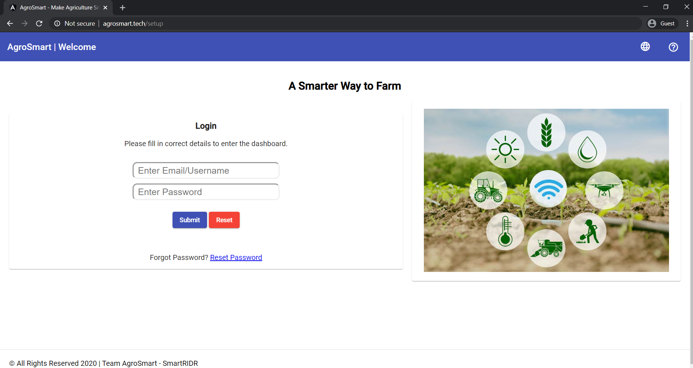
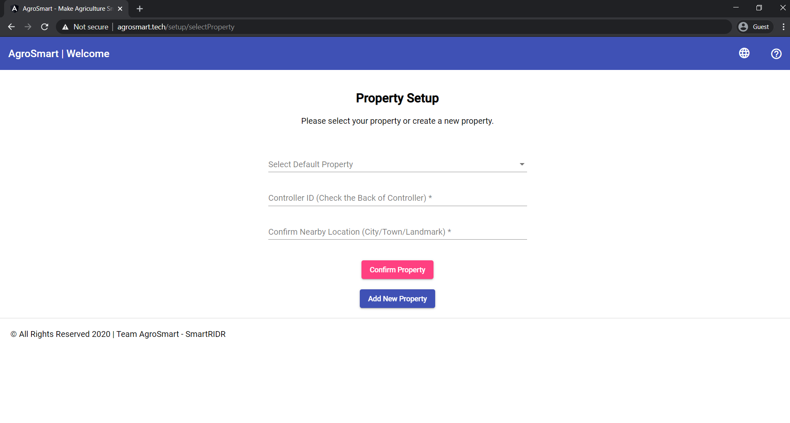
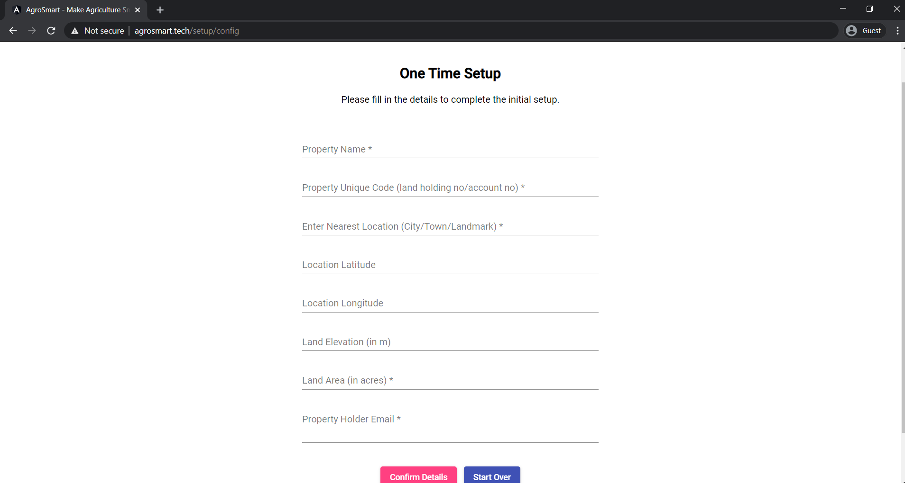
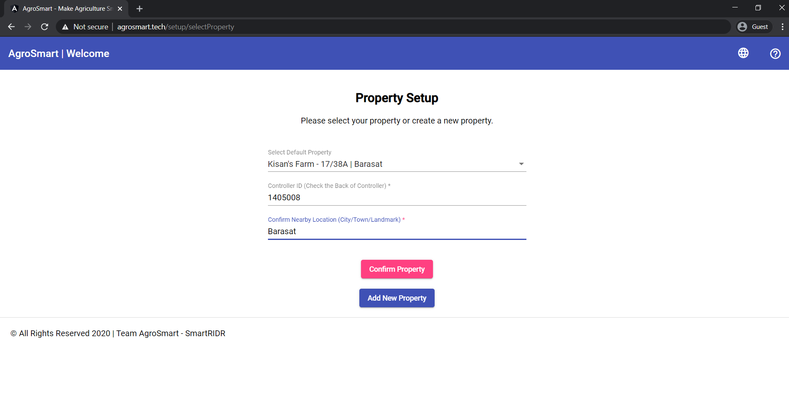
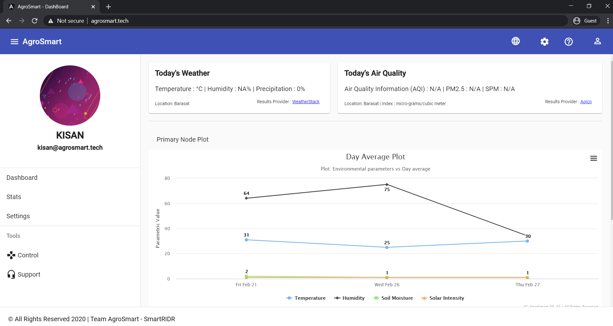
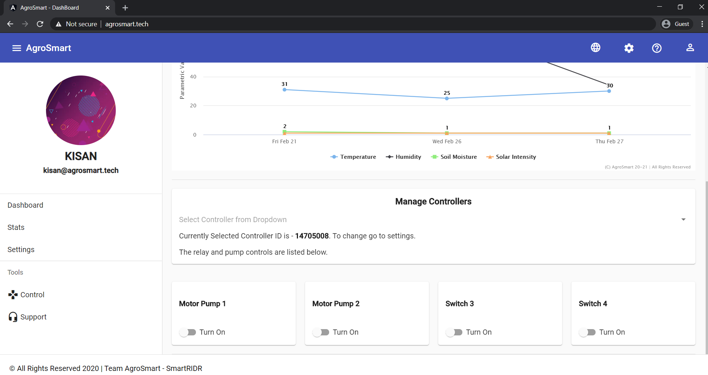

You can access the website of AgroSmart by typing www.agrosmart.tech in the address bar of any standard web
browser.
After that, click on the search button and you will be redirected to the website.

Once you reach the website after typing the web address you will be asked to login. You will have to fill in your ursername in the username field and the password you selected in the respective box and then click on the Submit button

Now you can either select an existing property or Create a new property

After selecting to add a new property you have to fill in the querries that are required for adding a new property,which include property name, property unique code, nearest location, location longitude, land elevation, land area and property holder's email. After filling up all the details click on the Confirm details tab to continue.

Fill in the fields with correct data, which include: Select property, Controller ID and nearby location. Then click on the Confirm Property button to be redirected to the dashboard


You can see the temperature and other data from the graphs and the numeric values present in the Dashboard. You can go to the Setting and chnage the Device ID to see the data gathered from that specific Controller/Pod "